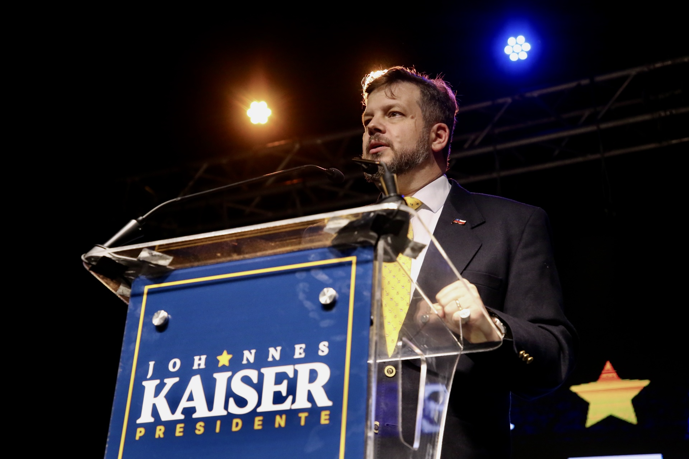

De la batalla cultural al Congreso
Johannes Kaiser inició su recorrido público desde la trinchera comunicacional. En septiembre de 2013 fundó el canal de YouTube El Nacional-Libertario, un espacio desde el cual promovió durante años el debate político, la batalla cultural y la divulgación consistente de las ideas de la libertad. Lo hizo cuando esas ideas no tenían vocería en Chile, con un trabajo sostenido que terminó forjando una audiencia y un movimiento.
En 2021 regresó al país y fue electo diputado de la República por el Distrito 10 de la Región Metropolitana para el período legislativo 2022-2026, convirtiéndose en uno de los parlamentarios con mayor consistencia doctrinaria en el Congreso.
Fundación del Partido Nacional Libertario
En junio de 2024 impulsó la formación del Partido Nacional Libertario, consolidando una fuerza política orientada a la defensa de la soberanía nacional, la libertad económica, el Estado de derecho y el sentido común. El PNL nace como respuesta a un vacío: la ausencia de una derecha sin complejos, dispuesta a defender sus convicciones sin pedir perdón por hacerlo.
Bajo su conducción, el partido logró inscripción formal en los plazos legales y construyó estructura territorial en las 16 regiones del país en pocos meses, superando los 50 mil militantes.
Candidatura presidencial 2025
En 2025 asumió la candidatura presidencial en representación del PNL. La campaña posicionó al movimiento como una de las principales alternativas políticas del país y, en una elección altamente competitiva, Kaiser obtuvo el cuarto lugar en la primera vuelta presidencial, con una votación que ratificó la existencia de un electorado nuevo, decidido y transversal que se identifica con sus ideas.

Pensamiento político
Johannes Kaiser se define doctrinariamente dentro del paleolibertarismo y el minarquismo: una visión que combina el respeto radical por la libertad individual con la defensa de las instituciones culturales, familiares y nacionales que la hacen posible. Esto se traduce en una propuesta clara: un Estado pequeño pero firme, soberano hacia afuera y limitado hacia adentro.
Pilares de su acción pública
Inviolabilidad de la libertad y la propiedad privada
Reducción de la burocracia estatal y fomento de la iniciativa individual sin coacciones arbitrarias.
Soberanía y realismo geopolítico
Primacía de los intereses nacionales por sobre los dogmas de organismos transnacionales.
Resguardo de la familia y la vida
Reconocimiento de la familia como núcleo fundamental de la sociedad y defensa del derecho inalienable a la vida.
Orden, seguridad y Estado de derecho
Respaldo firme a las fuerzas del orden y tolerancia cero frente a la delincuencia.
Formación
Realizó sus estudios de enseñanza media en establecimientos alemanes y en la Escuela Militar del Libertador Bernardo O'Higgins. Cursó estudios universitarios de Derecho y Humanidades en Chile y en la Universidad de Innsbruck, Austria, donde además desarrolló una activa labor periodística y comunicacional como corresponsal.